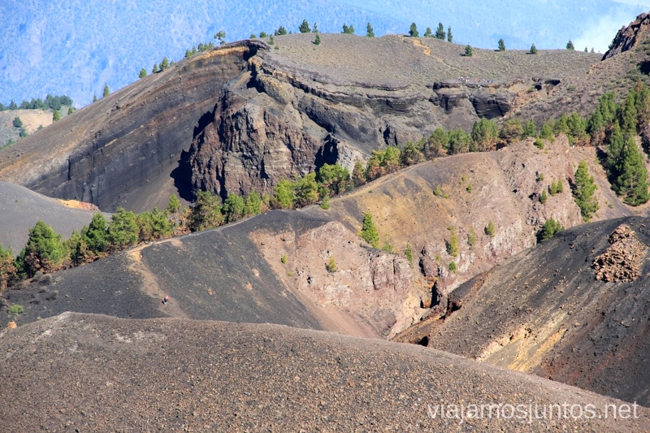
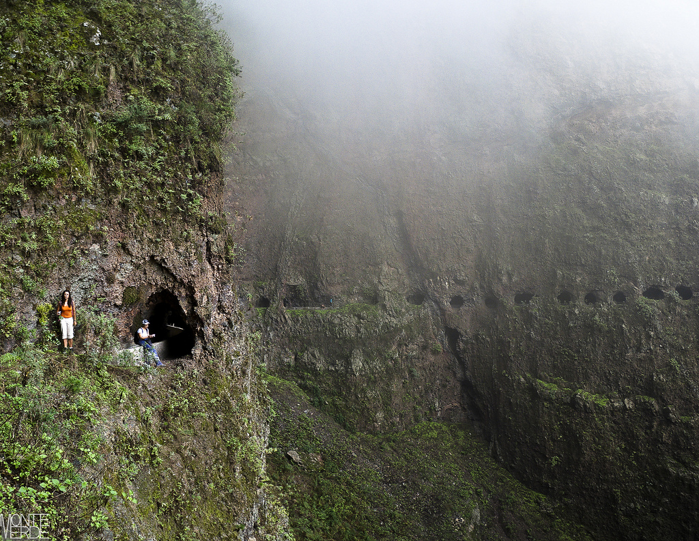

Ruta de Marcos y Cordero
Situada en la isla de La Palma, es una de las rutas más emblemáticas de Canarias.
El Arte
"El arte es algo mucho más importante, mucho más profundo..."

Barranco las Vacas
Formación rocosa en Gran Canaria que recuerda al Antelope Canyon de EE.UU.
El agua se espera en la tierra y la guagua en la carretera

Ruta de Los Volcanes

Ascensión al Teide
El viaje de mil millas comienza con un solo paso.

Barranco de Afur

Mil Ventanas
Ruta en Güímar no apta para personas con miedo a las alturas.